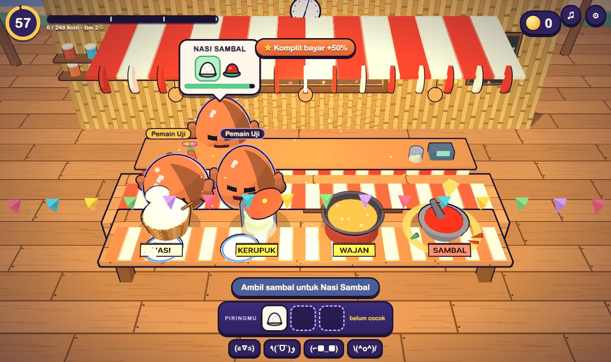
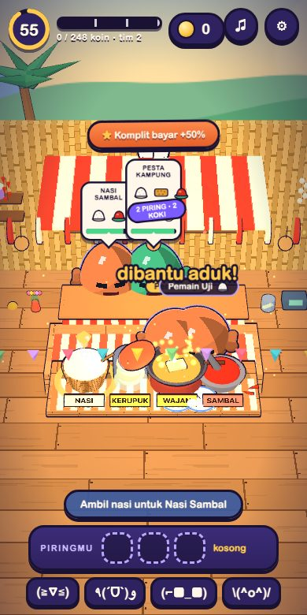
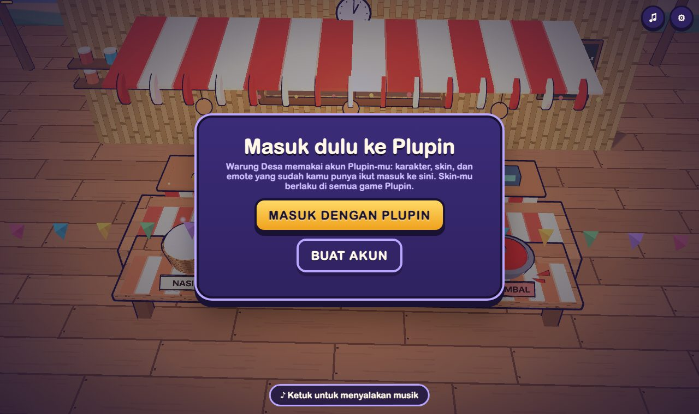
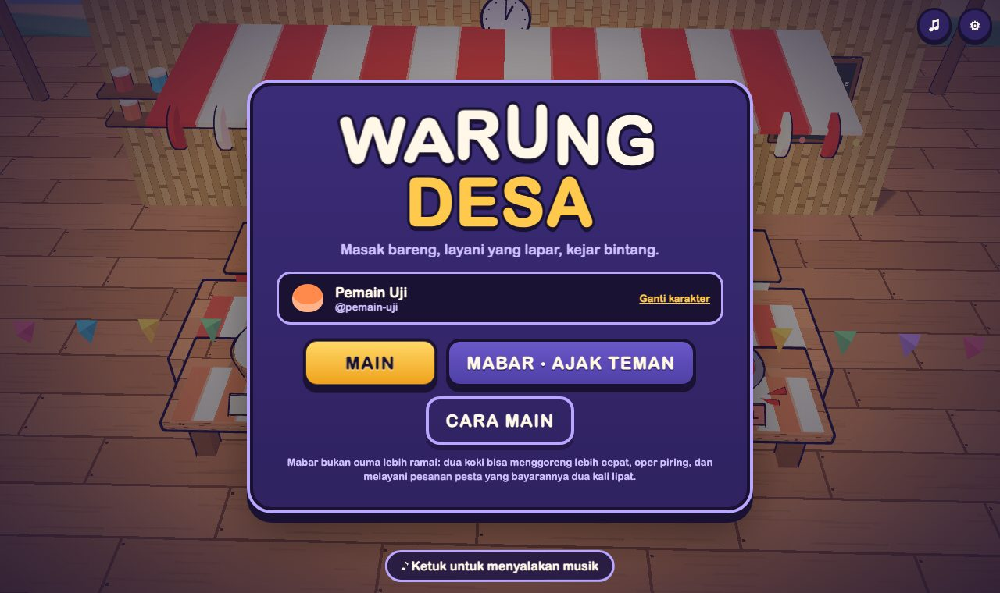
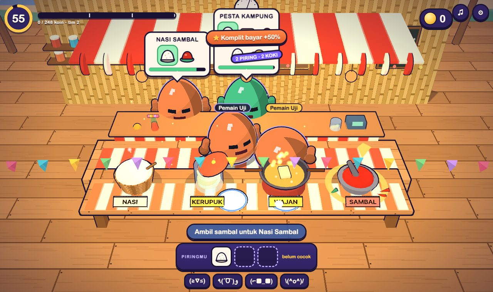
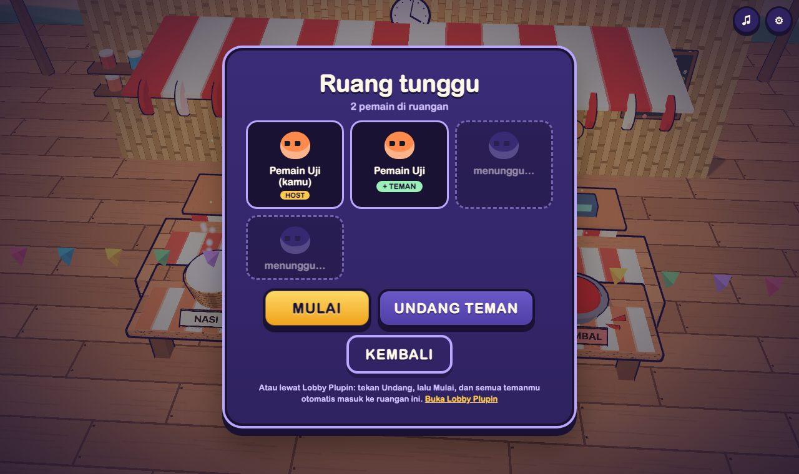
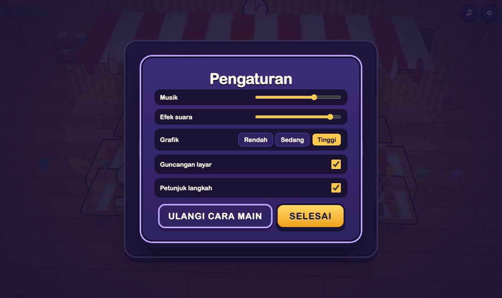
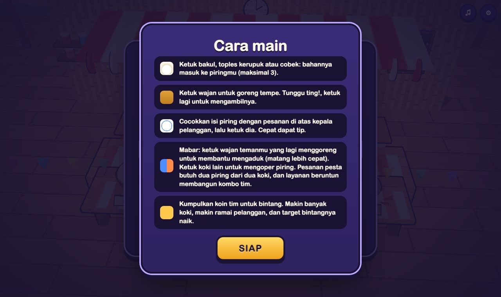

Game official Plupin, dan contoh pemakaian tiap fitur SDK.
Main: https://warung-desa.plupin.com · Repo: github.com/himanusia/plupin-warung-desa (submodule example/warung-desa) · Dipublikasikan dari akun Plupin lewat plupin up.
Warung desa 3D untuk 1–4 pemain. Pelanggan datang dengan pesanan di atas kepalanya. Ambil nasi, kerupuk, sambal, goreng tempe di wajan, susun piring (maks 3 bahan), lalu ketuk pelanggannya. Piring benar dibayar, cepat dapat tip, pesanan spesial +50%, piring salah dibuang. Satu shift 90 detik, 30 detik terakhir adalah jam sibuk.


Kiri: desktop dengan baki "Piringmu", petunjuk langkah, dan bahan yang sudah dimiliki menyala di gelembung pesanan. Kanan: HP.
Game memakai akun Plupin pemain lewat getPlayer(): nama, lencana, bentuk badan, warna, skin yang digambar di platform, dan emot yang dimiliki. Skin berlaku di seluruh platform, bukan per game. Belum masuk: game menampilkan layar "Masuk dulu ke Plupin" (tombol memanggil connectPlayer(), jendela platform meminta masuk/daftar). Hanya jika platform tidak bisa dihubungi (failed) game berjalan sebagai tamu. Penampilan pemain lain dikirim lewat frame look di room, jadi semua melihat skin yang sama.


| Mekanik | Efek |
|---|---|
| Bantu aduk | Ketuk wajan yang sedang digoreng teman: tempe matang 1,5 detik lebih cepat (sekali per tempe). |
| Oper piring | Ketuk koki lain: isi piringmu pindah ke piringnya, sehingga satu koki bisa fokus nasi, yang lain tempe. |
| Pesanan pesta | Hanya muncul dengan 2+ koki: dua piring dari dua koki berbeda dalam 8 detik, bayaran ±34–36 koin. |
| Kombo tim | Layanan beruntun dalam 6 detik menaikkan bayaran hingga +50% untuk siapa pun yang melayani. |
| Skala tim | Tiap koki tambahan menambah pelanggan dan menaikkan target bintang (satu koki 60/110/160). |


Kiri: "dibantu aduk!" saat teman membantu wajan, dengan bar target tim. Kanan: ruang tunggu dengan tombol + TEMAN per pemain Plupin (membuka /friends?add=username). Undang: tombol UNDANG TEMAN, atau Lobby Plupin (kode ?p=).
Tombol ⚙: volume musik, volume efek, kualitas grafik (rendah/sedang/tinggi), guncangan layar, petunjuk langkah, ulangi cara main. Kartu cara main muncul sebelum shift pertama; garis petunjuk dan penanda berdenyut di dunia selalu menunjuk langkah berikutnya. Musik pelan menyala di judul dan ruang tunggu begitu ada ketukan/tombol pertama (browser tidak mengizinkan sebelumnya; ada tombol "Ketuk untuk menyalakan musik"), lalu pindah ke versi penuh saat shift dan makin cepat di jam sibuk.


Animasi: koki menghadap kamera dan stasiun, tangan menjangkau saat mengambil bahan, mengaduk wajan, berbalik ke pelanggan saat menyerahkan piring yang terbang ke meja; baki piring dan ikon bahan di atas kepala koki lain terlihat.
| File | Fitur |
|---|---|
src/game.ts | aturan murni (aduk, oper, pesta, kombo, jam sibuk); 17 tes |
src/actors.ts, emotes.ts | createPlup, emot, klip kustom |
src/scene.ts, toon.ts, fx.ts, audio.ts | dunia toon responsif, juice, audio sintetis |
src/net.ts | Room, Peers, event host, kode party; satu kursi terpilih menjalankan aturan, lainnya mengirim ketukan (authority: "host") |
src/roll.ts | rollPlatformRandom: pelanggan spesial dari angka acak platform |
src/board.ts | Leaderboard (membaca papan yang dideklarasikan) |
src/shop.ts | requestPurchase dan getEntitlements: celemek emas permanen Σ20; game tidak pernah membelanjakan Sigma |
plupin.json | engine 3d, authority host, satu papan, satu produk |
Pengecekan plupin up (iPhone 13, jaringan fast3g): halaman interaktif 1,24 detik, 0 galat, semua budget terpenuhi. Ukuran bundel 601 KiB mentah, 159 KiB gzip. Teruji di dev dan produksi dengan dua pemain nyata (desktop dan HP): pesanan sama di kedua layar, hanya host yang bisa memulai, undian spesial datang dari platform. Pembelian celemek teruji di dev dengan akun non-pembuat (halaman konfirmasi platform, Σ20).
koin sudah dideklarasikan dan dibaca, tapi kosong sampai ada mode yang diwasiti.@plupin/character 0.2.0, @plupin/game-sdk 0.3.0 dan @plupin/cli 0.3.0 sudah di npm dan dipakai game langsung.createPlup({ model })), tapi belum ada jenis listing "model" untuk dijual creator.bun install bun test src # aturan dan petunjuk (23 tes) bun run typecheck bun run build # mencetak ukuran bundel bun run dev # tambah ?round=20 untuk shift latihan pendek plupin up ./dist --api https://api.plupin.com # dari akun Plupin, lewat cek anggaran
Pekerjaan platform yang lahir dari game ini: plupin dev menjawab /api/play/random (#934), Plup jadi karakter default 2D dan 3D (#944), pointer example/ (#938, #946), promosi ke main (#940, #948).